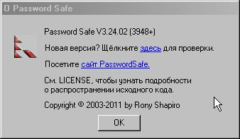

Меню Помощь предоставляет доступ к различным ресурсам о Password Safe.
Открыть данный файл со справкой
Открыть домашнюю страницу Password Safe в браузере.
Данный пункт меню открывает окно с информацией о версии и лицензии на распространение исходного кода. Также здесь вы можете проверить, наличие новых версий Password Safe. Примечание: из соображений безопасности Password Safe закроет текущий контейнер перед проверкой информации о версии в сети Интернет.
